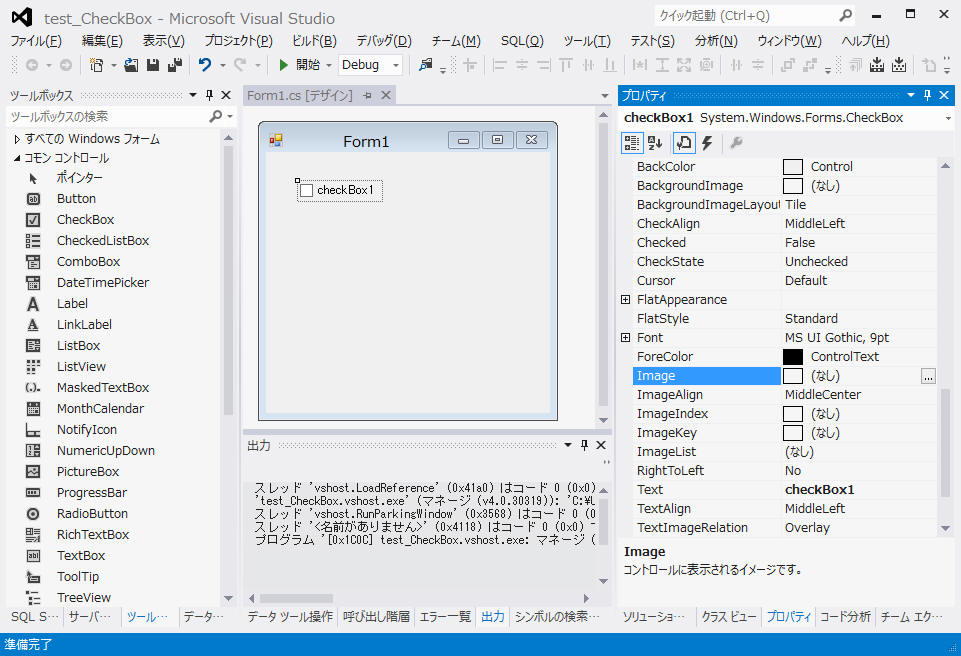
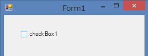
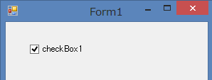
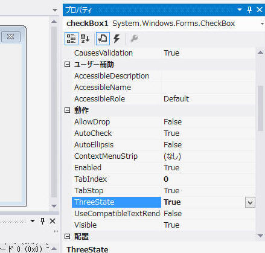
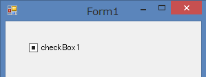
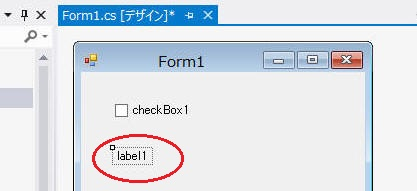
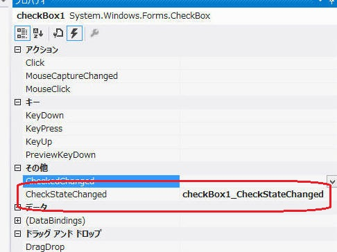
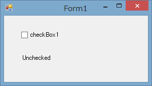
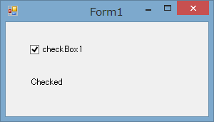

Form : CheckBox コントロール
内容一覧：
1. Simple CheckBox
2. 3状態CheckBox
3. CheckBox の状態取得
評価環境：
OS:
Windows8 64bit
コンパイラ： Visual Studio 2012
Update2、 C#、 .NET 4 |
まずはシンプルな CheckBox を使ってみます。
新しいプロジェクトを作成後に単純に CheckBox
を１つだけ配置。プロパティは全てデフォルトのままにします。

[F5] 実行すると２つの状態を遷移できる CheckBox を作成できました。
 
2. 3状態CheckBox
続いて３状態CheckBox。プロパティの TreeState を False から True へ変更します。

これで[F5]実行すると、中間状態(Interminate)を含む３状態を選ぶことができました。

評価環境：
OS:
Windows8 64bit
コンパイラ： Visual Studio 2012
Update2、 C#、 .NET 4 |
続いて、チェックボックスの状態が変わったことをイベント取得して画面の文字列を変更する、という処理を行ってみます。
初めに、文字列表示用のラベルを１つ追加します。

CheckStateChanged のイベント処理を実装します。

using System;
using System.Collections.Generic;
using System.ComponentModel;
using System.Data;
using System.Drawing;
using System.Linq;
using System.Text;
using System.Windows.Forms;
namespace test_CheckBox
{
public partial class Form1 : Form
{
public Form1()
{
InitializeComponent();
checkBox1_CheckStateChanged(this, new EventArgs());
}
private void checkBox1_CheckStateChanged(object sender, EventArgs e)
{
switch (checkBox1.CheckState)
{
case CheckState.Unchecked:
label1.Text = "Unchecked";
break;
case CheckState.Checked:
label1.Text = "Checked";
break;
case CheckState.Indeterminate:
label1.Text = "Interminate";
break;
default:
break;
}
}
}
}
|
[F5]実行すると以下のような画面が表示され、３つの状態を表示できました。

 
Sample program downlowd
記載： 2013年05月11日 木下英俊